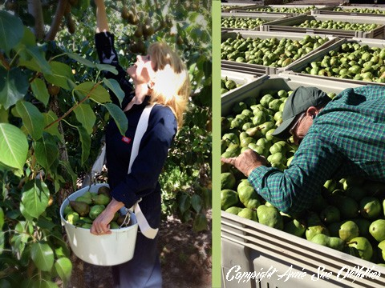
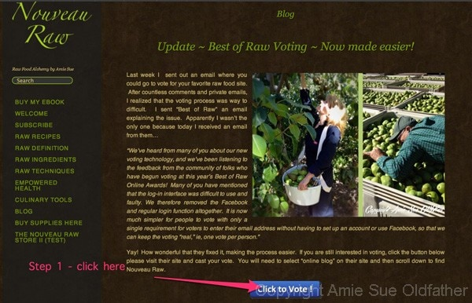
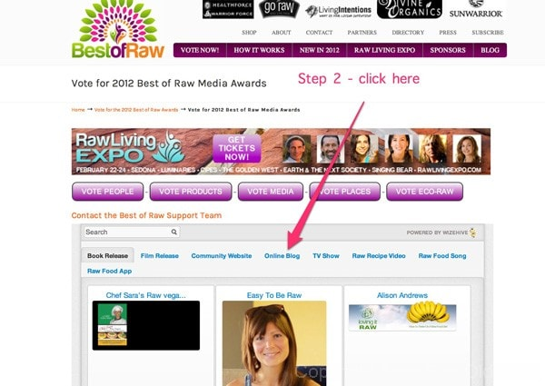
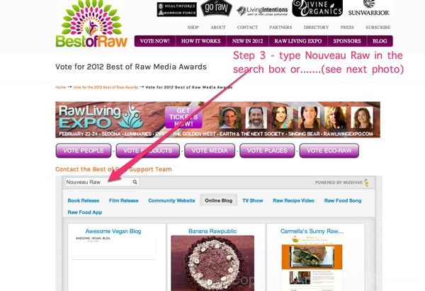
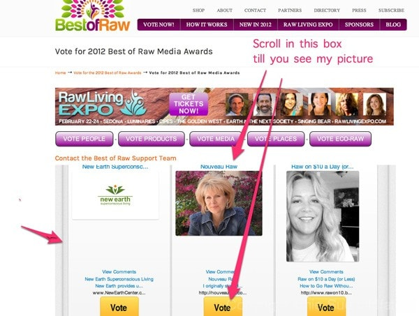

Update ~ Best of Raw Voting ~ Now made easier!

Last week I sent out an email where you could go to vote for your favorite raw food site. After countless comments and private emails, I realized that the voting process was way to difficult. I sent “Best of Raw” an email explaining the issue. Apparently I wasn’t the only one because today I received an email from them…
“We’ve heard from many of you about our new voting technology, and we’ve been listening to the feedback from the community of folks who have begun voting at this year’s Best of Raw Online Awards! Many of you have mentioned that the log-in interface was difficult to use and faulty. We therefore removed the Facebook and regular login function altogether. It is now much simpler for people to vote with only a single requirement for voters to enter their email address without having to set up an account or use Facebook, so that we can keep the voting “real,” ie, one vote per person.”
Yay! How wonderful that they fixed it, making the process easier. If you are still interested in voting, click the button below please visit their site and cast your vote. You will need to select “online blog” on their site and then scroll down to find Nouveau Raw.
Many blessings and have a wonderful day. amie sue
1/20/13 Update… It seems people are still have problems finding me so they can vote. I took step by step screen shots to help….



OR

© AmieSue.com